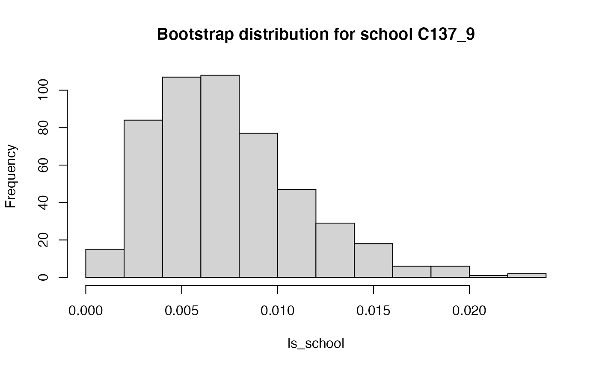

The segregation package includes functionality to calculate entropy-based segregation measures, namely the Mutual Information Index (M) and the Theil Index (H), which is a normalized version of the M index. The package also includes several methods for decomposing the index into between/within components and into local segregation scores, as well as methods to decompose differences in segregation indices. All of these methods have arguments to obtain standard errors and confidence intervals through bootstrapping.
Detailed information on these indices can be found in the references at the end of this vignette.
The idea of a segregation index is to summarize a contingency table to a single number. For instance, we may have a table with \(U\) units, say schools or occupations, and \(G\) groups, say gender or racial groups. For each combination of unit and group we have a count, \(t_{ug}\). Arranged in a \(U\times G\) matrix \(\mathbf{T}\), this is what the structure of the data looks like:
| \(g=1\) | … | \(g=G\) | |
|---|---|---|---|
| \(u=1\) | \(t_{11}\) | … | \(t_{1G}\) |
| \(u=2\) | \(t_{21}\) | … | \(t_{2G}\) |
| \(u=3\) | \(t_{31}\) | … | \(t_{3G}\) |
| … | … | … | … |
| \(u=U\) | \(t_{U1}\) | … | \(t_{UG}\) |
From this matrix, we can define \(t=\sum_{u=1}^U\sum_{g=1}^G t_{ug}\), the total population size. The joint probability of being in unit \(u\) and racial group \(g\) is \(p_{ug}=t_{ug}/t\). Also define \(p_{u \cdot}=\sum_{g=1}^{G}t_{ug}/t\) and \(p_{\cdot g}=\sum_{u=1}^{U}t_{ug}/t\) as the marginal probabilities of units and groups, respectively. The Mutual Information Index is then defined as
\[ M(\mathbf{T})=\sum_{u=1}^U\sum_{g=1}^Gp_{ug}\log\frac{p_{ug}}{p_{u \cdot}p_{\cdot g}}. \] The Theil Index is closely related to the M index, as it is just a normalized version of the Mutual Information Index:
\[ H(\mathbf{T})=\frac{M(\mathbf{T})}{E(\mathbf{T})}, \]
where \(E(\mathbf{T})\) denotes the entropy of the group marginal distribution of \(\mathbf{T}\), i.e. \(E(\mathbf{T})=-\sum_{g=1}^{G}p_{\cdot g}\log p_{\cdot g}\). Dividing through the group entropy has the effect of constraining H to be between 0 and 1.
For the examples, we will use a dataset built into the segregation package, schools00. This dataset contains data on 2,045 schools across 429 school districts in three U.S. states. For each school, the dataset records the number of Asian, Black, Hispanic, White, and Native American students. The segregation package requires data in long form (because most segregation data comes in this form), not in the form of contingency tables. Hence, each row of the schools00 dataset is a unique combination of a given school and a racial group, and the column n records the number of students for this combination:
library("segregation")
head(schools00[, c("school", "race", "n")])
#> school race n
#> 1 A1_1 asian 2
#> 2 A1_1 black 14
#> 3 A1_1 hisp 30
#> 4 A1_1 white 351
#> 5 A1_2 black 9
#> 6 A1_2 hisp 101Note that in the first school, A1_1, there are no Native American students. Hence, that row is missing.
If you have data in the form of contingency tables, you can use matrix_to_long() to convert them to the long format required for the package. As an example:
(m = matrix(c(10, 20, 30, 30, 20, 10), nrow = 3))
#> [,1] [,2]
#> [1,] 10 30
#> [2,] 20 20
#> [3,] 30 10
colnames(m) <- c("Black", "White")
matrix_to_long(m, group = "race", unit = "school")
#> school race n
#> 1: 1 Black 10
#> 2: 2 Black 20
#> 3: 3 Black 30
#> 4: 1 White 30
#> 5: 2 White 20
#> 6: 3 White 10The group and unit arguments are optional.
Compute the M and H indices using mutual_total():
mutual_total(schools00, "race", "school", weight = "n")
#> stat est
#> 1: M 0.4255390
#> 2: H 0.4188083Interpreting the M is not easy, because it is not normalized. However, the H can range from 0 to 1, so a value of 0.419 would indicate moderate segregation.
The second argument to mutual_total() refers to the groups, while the third argument refers to the units. Switching groups and units does not affect the M index, but does change the H index:
mutual_total(schools00, "school", "race", weight = "n")
#> stat est
#> 1: M 0.42553898
#> 2: H 0.05642991This is because the segregation package always divides by the marginal group entropy, and it would here hence divide by the entropy of the school distribution, which we would expect to be much larger (as there are many more schools than racial groups). To check, we can use the entropy() function:
(entropy(schools00, "race", weight = "n"))
#> [1] 1.016071
(entropy(schools00, "school", weight = "n"))
#> [1] 7.541018Therefore, if the H index is used, it is important to specify the groups and units correctly.
For inference (discussed in more detail below), we can use bootstrapping to obtain standard errors and confidence intervals:
mutual_total(schools00, "race", "school", weight = "n",
se = TRUE, CI = .95, n_bootstrap = 500)
#> 500 bootstrap iterations on 877739 observations
#> stat est se CI bias
#> 1: M 0.4219624 0.0007567454 0.4205137,0.4233626 0.00357661
#> 2: H 0.4152780 0.0006925583 0.4140263,0.4166336 0.00353031As there a large number of observations, the standard errors are very small.
We might wonder whether segregation is different across the three different states. We can compute their segregation indices manually (just showing the M for simplicity):
split_schools <- split(schools00, schools00$state)
mutual_total(split_schools$A, "race", "school", weight = "n")[1, ]
#> stat est
#> 1: M 0.4085965
mutual_total(split_schools$B, "race", "school", weight = "n")[1, ]
#> stat est
#> 1: M 0.2549959
mutual_total(split_schools$C, "race", "school", weight = "n")[1, ]
#> stat est
#> 1: M 0.3450221Clearly, state A is more segregated than state C, which in turn shows higher school segregation than B. One of the advantages of entropy-based segregation indices is that these three state-specific indices have a simple relationship to the overall index. This is called the between/within decomposition: Total segregation can be decomposed into a term that measures how much the distribution of racial groups differs between states, and into a term that measures segregation within states. If we have \(S\) states (or “super-units” more generally), where each school belongs to exactly one state, the M index can be decomposed as follows:
\[ M(\mathbf{T})=M(\mathbf{S}) + \sum_{s=1}^S p_s M(\mathbf{T}_s), \] where \(\mathbf{T}\) is the full \(U \times G\) contingency table, \(\mathbf{S}\) is the aggregated contingency table of dimension \(S\times G\), \(p_s\) is the population proportion of state \(s\) (such that \(\sum_{s=1}^S p_s=1\)), and \(\mathbf{T}_s\) is the subset of rows of \(\mathbf{T}\) belonging to state \(s\). Put in simple terms, the M index can be decomposed into a between-state segregation index, plus a weighted average of within-state M indices.
For the H index, we are dividing the above formula by \(E(\mathbf{T})\). This makes the formula a bit more complicated, because the normalization has to be offset in the decomposition:
\[ H(\mathbf{T})=H(\mathbf{S}) + \sum_{s=1}^S \frac{E(\mathbf{T}_s)}{E(\mathbf{T})} p_s H(\mathbf{T}_s), \]
where \(E(\cdot)\) is again the entropy of the marginal group distribution. Note that \(E(\mathbf{T})=E(\mathbf{S})\), because the group marginal distributions are identical.
To compute the decomposition using the segregation package, use:
# total segregation
(total <- mutual_total(schools00, "race", "school", weight = "n"))
#> stat est
#> 1: M 0.4255390
#> 2: H 0.4188083
# between-state segregation:
# how much does the racial distributions differ across states?
(between <- mutual_total(schools00, "race", "state", weight = "n"))
#> stat est
#> 1: M 0.09924370
#> 2: H 0.09767398
# within-state segregation:
# how much segregation exist within states?
(mutual_total(schools00, "race", "school", within = "state", weight = "n"))
#> stat est
#> 1: M 0.3262953
#> 2: H 0.3211343Note that \(0.426 = 0.0992 + 0.326\) and \(0.419 = 0.0977 + 0.321\). The results indicate that about 75% of the segregation is within states. In other words, differences in the racial composition of the three different states account for less than 25% of segregation.
By using mutual_total() with the within argument, we can obtain the overall within component, but we do not obtain the decomposition by state. To do so, we can use mutual_within():
(within <- mutual_within(schools00, "race", "school",
within = "state", weight = "n", wide = TRUE))
#> state M p H ent_ratio
#> 1: A 0.4085965 0.2768819 0.4969216 0.8092501
#> 2: B 0.2549959 0.4035425 0.2680884 0.9361190
#> 3: C 0.3450221 0.3195756 0.3611257 0.9402955This is a much simpler way to obtain state-specific segregation scores compared to subsetting manually, as shown in the beginning of this section. In addition to the M and H indices, we also obtain p, the population proportion of the state (\(p_s\) above), and ent_ratio, which is \(E(\mathbf{T}_s)/E(\mathbf{T})\) from above. Hence, we can recover the total within-component using
which is exactly the same as before. The quantity \(p_s M(\mathbf{T}_s)\) is itself of interest, because it shows how much the states contribute to the segregation total, when taking into account their size. By adding the between component, we can calculate the contribution of the four components:
# merge into a vector
components <- c(between$est[1], within$M * within$p)
names(components) <- c("Between", "A", "B", "C")
signif(100 * components / total$est[1], 3)
#> Between A B C
#> 23.3 26.6 24.2 25.9Each of the four components contributes about a quarter to the total segregation of 0.426. Note that state A is the smallest state (27.7% of the population), but contributes the largest percentage (26.6%) to total segregation. Hence, the decomposition shows that it is important to look at both \(p_s\), the state sizes, as well as \(M(\mathbf{T}_s)\), within-state segregation.
The M index (but not the H index) allows for another decomposition, into local segregation scores. To define this decomposition, let \(p_{g|u} = t_{ug} / t_{u \cdot}\) be the conditional probability of being in group \(g\), given that one is in unit \(u\). We can then define the local segregation score of unit \(u\) as
\[L_u = \sum_{g=1}^G p_{g|u}\log\frac{p_{g|u}}{p_{\cdot g}}\] The weighted average of the \(L_u\) is again \(M(\mathbf{T})\), i.e. \(M(\mathbf{T}) = \sum_{u=1}^U p_{u\cdot}L_u\).
To obtain the local segregation scores \(L_u\), along with the marginal weights \(p_{u\cdot}\), use mutual_local():
mutual_local(schools00, "race", "school", weight = "n", wide = TRUE)
#> school ls p
#> 1: A1_1 0.1826710 0.0004522985
#> 2: A1_2 0.1825592 0.0004978701
#> 3: A1_3 0.2756157 0.0006642066
#> 4: A1_4 0.1368034 0.0005685061
#> 5: A2_1 0.3585546 0.0004260948
#> ---
#> 2041: C165_1 0.3174930 0.0004568556
#> 2042: C165_2 0.3835477 0.0005297702
#> 2043: C165_3 0.2972550 0.0005650883
#> 2044: C166_1 0.3072281 0.0011586588
#> 2045: C167_1 0.3166498 0.0005354667Local segregation scores are based on much less data than the full M index, so it often makes sense to obtain confidence intervals. The following code plots the length of the 95% confidence interval in relation to the size of each school:
localse <- mutual_local(schools00, "race", "school", weight = "n",
se = TRUE, wide = TRUE, n_bootstrap = 1000)
#> 1000 bootstrap iterations on 877739 observations
localse$lengthCI <- sapply(localse$ls_CI, diff)
with(localse, plot(x = p, y = lengthCI, pch = 16, cex = 0.3))Although the relationship is not deterministic, larger schools have shorter confidence intervals.
Because the M is symmetric, local segregation scores can also be obtained for groups. The equivalent definition for the local segregation score of group \(g\) is then
\[L_g = \sum_{u=1}^U p_{u|g}\log\frac{p_{u|g}}{p_{u \cdot}},\]
and, as expected, \(M(\mathbf{T}) = \sum_{g=1}^G p_{\cdot g}L_g\).
To obtain these scores, switch the group and unit arguments in mutual_local:
(localg <- mutual_local(schools00, "school", "race", weight = "n", wide = TRUE))
#> race ls p
#> 1: asian 0.6287673 0.022553401
#> 2: black 0.8805413 0.190149919
#> 3: hisp 0.7766327 0.151696575
#> 4: white 0.1836393 0.628092178
#> 5: native 1.4342644 0.007507927These results show that the racial groups experience very different levels of segregation: White students are less segregated than Asian, Black, Hispanic, and, especially, Native American students.
The four main functions of the packages, mutual_total(), mutual_within(), mutual_local(), and mutual_difference() all support inference through bootstrapping. Inference for segregation indices is tricky, and the standard error estimates and confidence intervals should not be trusted too much when there is little data, and especially when the segregation index is very close to either 0 or maximum segregation.
To estimate standard errors and confidence intervals, use se = TRUE. The coverage of the confidence interval can be specified in the CI argument. The number of bootstrap iterations can be specified as well:
(se <- mutual_total(schools00, "race", "school", weight = "n",
se = TRUE, CI = .95, n_bootstrap = 500))
#> 500 bootstrap iterations on 877739 observations
#> stat est se CI bias
#> 1: M 0.4218581 0.0008100201 0.4202880,0.4234348 0.003680874
#> 2: H 0.4152018 0.0007406098 0.4137038,0.4166439 0.003606549The confidence intervals are based on the percentiles from the bootstrap distribution, and hence require a large number of bootstrap iterations for valid interpretation. The estimate est that is reported in the results has already been “debiased”, i.e. the bias that has been estimated from the bootstrap distribution (which is reported in bias) has been subtracted from the usual maximum-likelihood estimate that we would obtain from mutual_total with se = FALSE. The confidence interval is centered around the debiased estimate.
On balance, confidence intervals are preferred over the standard error because the bootstrap distribution can be skewed, especially when segregation is very low or very high. For this example, we can see that the standard errors provide almost identical coverage to the confidence intervals, as
# M
with(se, c(est[1] - 1.96 * se[1], est[1] + 1.96 * se[1]))
#> [1] 0.4202705 0.4234457
# H
with(se, c(est[2] - 1.96 * se[2], est[2] + 1.96 * se[2]))
#> [1] 0.4137502 0.4166534provide effectively the same coverage as the confidence intervals obtained from the percentile bootstrap.
Whenever the bootstrap is used, the bootstrap distributions for each parameter are reported in an attribute bootstrap of the returned object. This can be used, for instance, to check whether the bootstrap distribution is skewed. The following code computes local segregation scores for all schools, and then shows a histogram of the bootstrap distribution for school C137_9, which has a very low local segregation score:
local <- mutual_local(schools00, "race", "school", weight = "n",
se = TRUE, CI = .95, n_bootstrap = 500)
#> 500 bootstrap iterations on 877739 observations
# pick bootstrap distribution of local segregation scores for school C137_9
ls_school <- attr(local, "bootstrap")[school == "C137_9" & stat == "ls", boot_est]
hist(ls_school, main = "Bootstrap distribution for school C137_9")
For this school, the bootstrap distribution is skewed. If precise inference about this specific school is needed, the standard error should not be interpreted, and the confidence interval should only be interpreted when the number of bootstrap iterations is large.
The command mutual_difference() can be used to decompose differences in segregation, as described in Elbers (2021). The default, and recommended method, is to use method = shapley (or method = shapley_detailed). The other methods (mrc, km) exist mostly for testing purposes, and are not recommended. Details on the procedure and how to interpret the terms of the decomposition are found in Elbers (2021).
mutual_difference(schools00, schools05, "race", "school", weight = "n")
#> stat est
#> 1: M1 0.425538976
#> 2: M2 0.413385092
#> 3: diff -0.012153884
#> 4: additions -0.003412776
#> 5: removals -0.011405093
#> 6: group_marginal 0.018550238
#> 7: unit_marginal -0.012391915
#> 8: structural -0.003494338This method also supports inference by setting se = TRUE.
Elbers, B. (2021). A Method for Studying Differences in Segregation Across Time and Space. Sociological Methods & Research. https://doi.org/10.1177/0049124121986204
Mora, R., & Ruiz-Castillo, J. (2011). Entropy-based Segregation Indices. Sociological Methodology, 41(1), 159–194. https://doi.org/10.1111/j.1467-9531.2011.01237.x
Theil, H. (1971). Principles of Econometrics. New York: Wiley